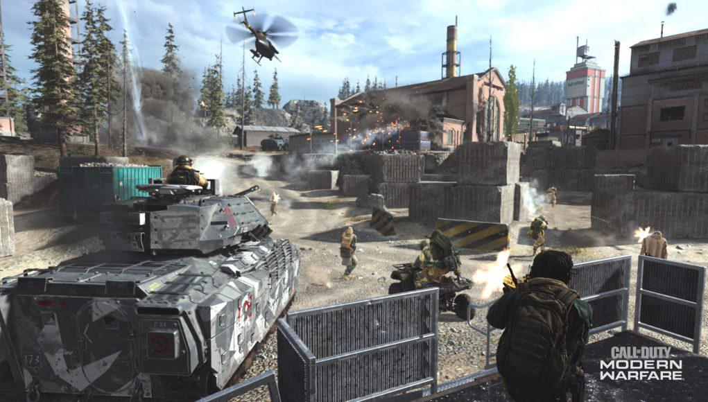
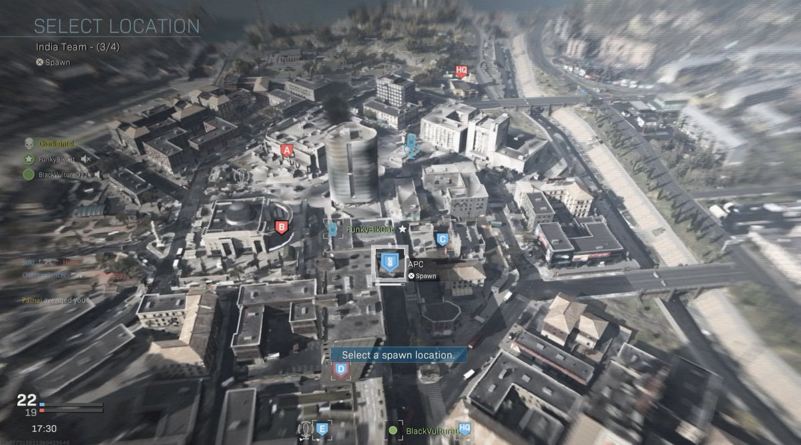
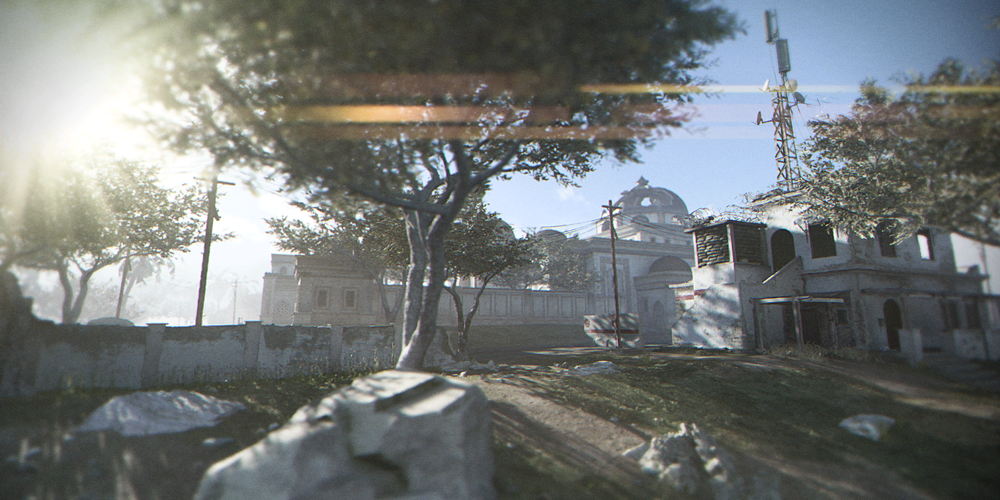
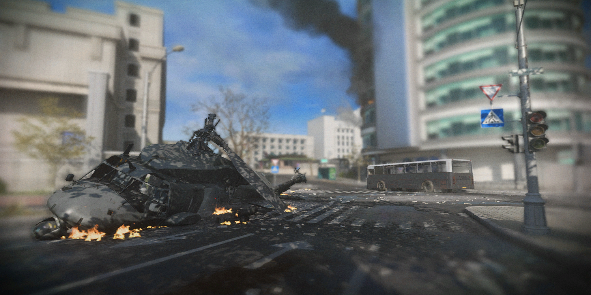
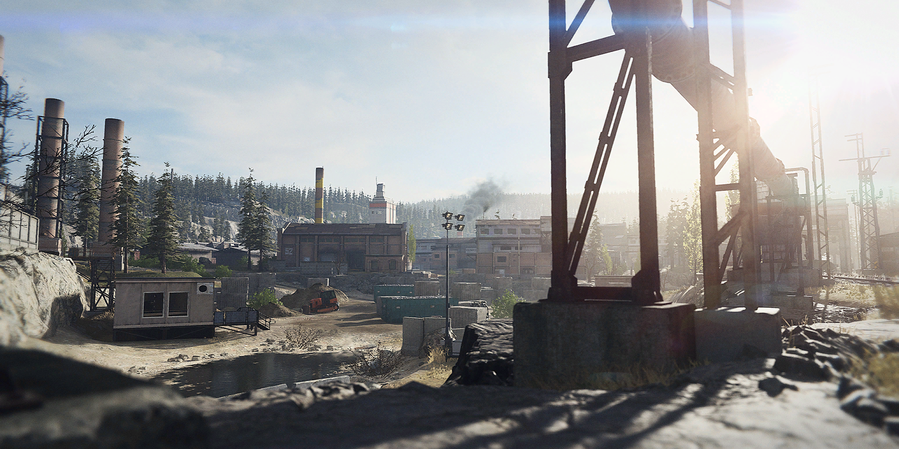
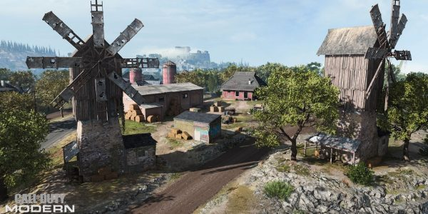
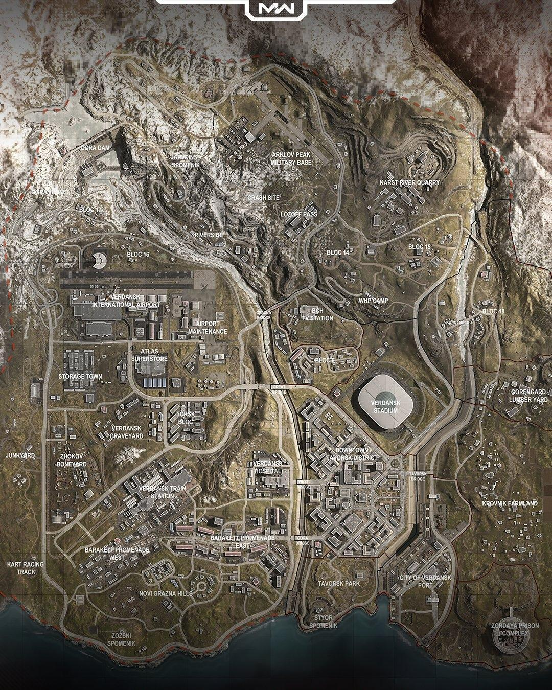

Groundwar is een nieuwe gamemode die geïntroduceerd werd in Modern warfare.
Dit is een best grote gamemodes met verschillende regels en maps dus daarom hebben we er een aparte pagina voor.

Ground War lijkt erg op de gamemode Domination, alleen in deze gamemode speel je met 64 spelers op een grote map.
De maps zijn gemaakt voordat Warzone uitkwam en als je kijkt naar de map Verdansk komen ze allemaal terug in de map (behalve Aniyah Palace).
Als je in een potje laad, spawn je in een helikopter die je met jouw team van 32 spelers aan jullie kant van de map dropt.
De gamemode werkt ongeveer hetzelfde als Domination, alleen zijn er hier 5 vlaggen in plaats ven 3: de A,B,C,D en E vlaggen die over de map verspreid zijn.

Als je in Groundwar doodgaat, krijg je een overview van de map met alle vlaggen en vehicles erop, je kan dan kiezen waar je wilt spawnen maar alleen op vlaggen die door jouw team geclaimed zijn, jouw spawn of op teammates die niet in battle zijn.
In de gamemode zijn er namelijk, in tegenstelling tot elke andere gamemode, vehicles.
Bij de spawn staan er standaard een paar voertuigen zoals een quad, een off-road buggy, een suv en een helicopter.
Ook zitten er tanks in groundwar die niet erg snel zijn maar wel veel HP hebben, als een vehicle stukgaat of ontploft spawnt die na een tijdje terug.
Ground War heeft nog een ander verschil met Domination, namelijk het duurt veel langer om een vlag te capturen.
Hoe meer mensen er op een vlag staan, hoe sneller deze gecaptured word, dus je moet echt samenwerken met jouw team.
Over het algemeen lijkt deze gamemode erg op Battlefield maar dan in een Call of Duty jasje.
Hier zijn de maps waar groundwar op gespeeld kan worden:

Aniyah Palace was eerst een multiplayer map maar dat was een grote mislukkeling.
De map was veel te groot voor 6v6 dus hebben ze er een Groundwar map van gemaakt.
Helaas is de map nog steeds verschrikkelijk om op te spelen vanwege de spawns, ze zijn zo slecht ontworpen dat telkens als je jouw spawn uitloopt, je gespawnkilled word.
Aniyah Palace is ook de enige Groundwar map die niet in de Warzone map Verdansk voorkomt.

Tavorsk District is de beste groundwar map.
Deze map vind zich plaats in het centrum van Verdansk in Downtown, met allemaal flatgebouwen en straten.
Het is ook de grootste map en door zijn vele flatgebouwen en hoogteverschil is deze map ideaal om te snipen.
In het midden van de map staan de 3 belangrijkste gebouwen en ook de 2 hoogste: De C vlag op het hoogste, blauwe gebouw, de B vlag in het gemeentehuis en de D vlag in het 2e hoogste gebouw.
In deze driehoek speelt eiglijk alles zich af en met helicopters is het erg leuk om tussen de gebouwen door te vliegen.

Karst River Quarry speelt zich af in een industrieël gebied met in het midden veel gebouwen en aan beide kanten een mijn.
In het midden staan de 3 belangrijkste vlaggen: de B,C en D vlaggen in de gebouwen.
De A vlag bevind zich naast het grootste gebouw aan de noordkant van de map en de E vlag aan de zuidkant in een krater die gegraven is.
De map bevind zich in een dal dus eromheen zitten bergen die ideaal zijn voor snipers.

De laatste Groundwar map is Krovnik Farmland.
Deze map speelt zich af op het platte land zoals je kan zien, in een dorpje met houten huisjes en molens.
Ook hier staan de 3 vlaggen in het midden met de andere 2 aan de buitenzijdens.
De D vlag bevindt zich in een grote opslag schuur, de C vlag in het grootste huis en de B vlag achter 3 kleine huisjes.
In deze map heb je geen hoge gebouwen waar je op kan klimmen dus wordt je meer gedwongen om op close range te spelen.
Dat waren alle Groundwar maps, hieronder staat nog een plaatje van Verdansk: de Warzone map, waar je in het midden Tavorsk District kan zien, rechts boven Quarry en rechts onder Krovnik Farmland.
